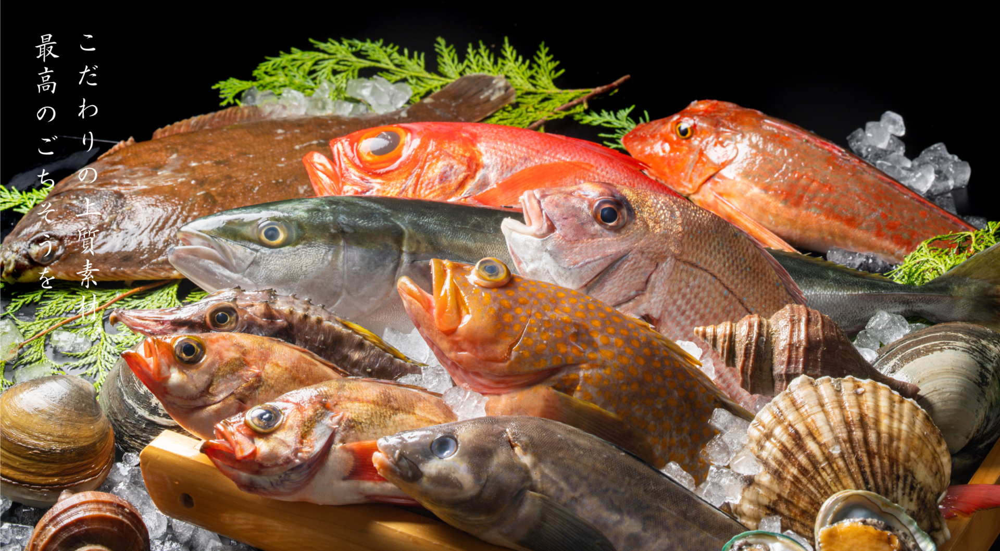
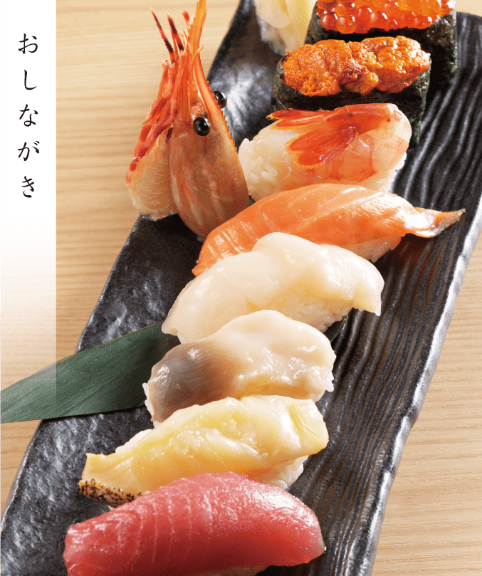

Photo Gallery
海へ 釧路中央店とは
幣舞橋すぐそば、タブレット注文の使いやすい海鮮居酒屋。カニコロッケ・焼き鳥・刺身・カルボナーラうどんなど幅広いメニューが揃い、家族連れ・観光客にも最適。ホットペッパーグルメでクーポン配信中。
📍 北海道釧路市末広町2丁目1番1 浪漫座ビル2F 営業時間：16:00〜22:00 定休日：無休
実食レビュー
釧路の夜を彩る海鮮居酒屋
釧路港から直送される新鮮な魚介をメインに、旬の一品料理が揃う。釧路ならではのホッケ・つぶ貝・シシャモ・秋サンマなど季節ごとに変わるメニューが常連客を飽きさせない。
地酒や全国の日本酒のラインナップも充実。一人飲みから宴会まで対応する使い勝手の良さが人気の理由。釧路観光の締めくくりとして、ぜひ立ち寄りたい一軒。
おすすめメニュー
- 刺身盛合せ……釧路近海の旬魚を毎日仕入れる鮮度抜群の盛合せ
- 牡蠣料理……厚岸産牡蠣を様々なスタイルで（生・焼き・蒸し）
- 海鮮鍋・もつ鍋……道東食材をふんだんに使った鍋料理
- ザンギ・串揚げ……おつまみとして釧路グルメを締めくくる
最新の営業時間・メニューは公式情報をご確認ください。
アクセス・予約
訪問のコツ
- 繁華街立地は予約なしでも入りやすいが、週末は予約がベター
- 釧路産の旬魚メニューは数量限定。早めの入店がおすすめ
- ホットペッパーグルメのクーポン活用でお得に